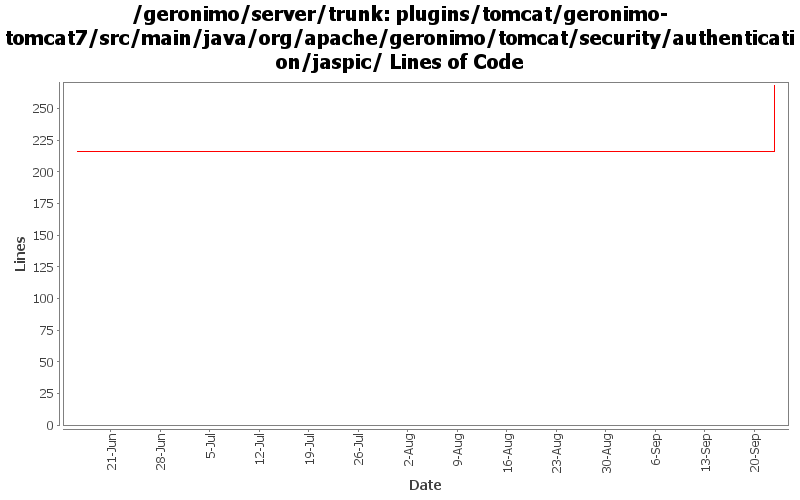

[root]/plugins/tomcat/geronimo-tomcat7/src/main/java/org/apache/geronimo/tomcat/security/authentication/jaspic

| Author | Changes | Lines of Code | Lines per Change |
|---|---|---|---|
| Totals | 5 (100.0%) | 61 (100.0%) | 12.2 |
| djencks | 3 (60.0%) | 61 (100.0%) | 20.3 |
| xuhaihong | 2 (40.0%) | 0 (0.0%) | 0.0 |
GERONIMO-5468 Based on an original patch by Han Hong Fan. Support authenticate and login/logout methods in HttpServletRequest interface. may need some tidying up
61 lines of code changed in 3 files:
a. Use Boolean/Integer.valueOf
b. Use Map.Entry as iterator item
c. Make sure all the stream objects are closed
0 lines of code changed in 2 files: